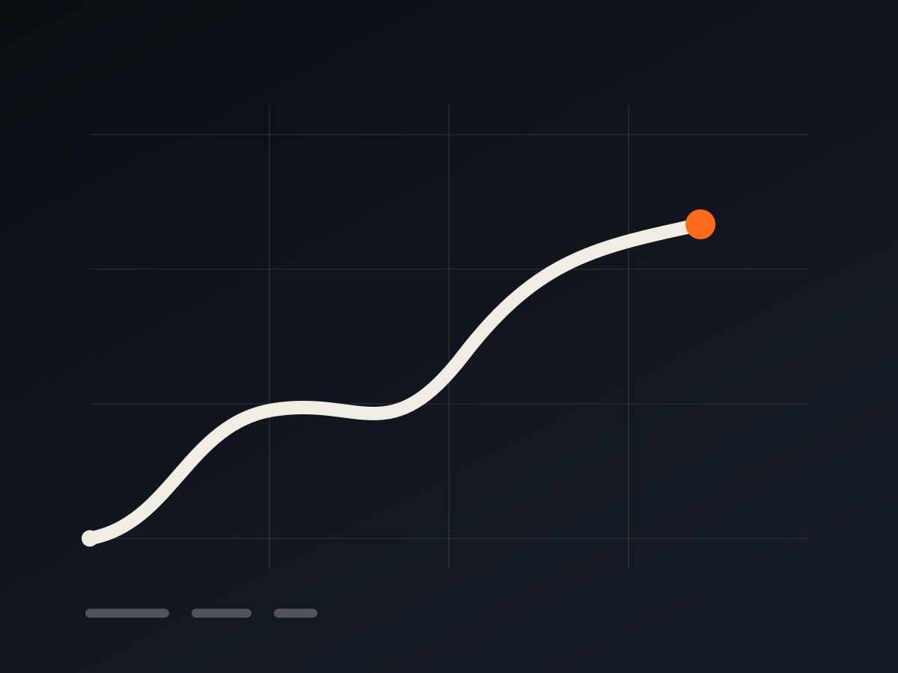
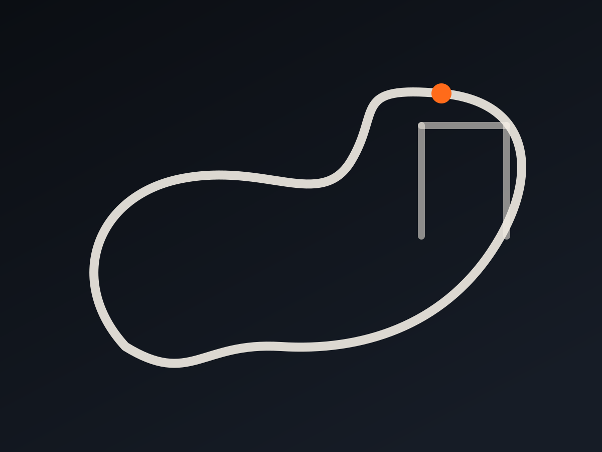

跑得慢，才跑得久。把高驰数据，变成你看得顺眼的看板。
GPS 轨迹不用表格。看板把每一次跑步还原成一条路线，配速和爬升都看得见。
痛楚难以避免，而磨难可以选择。 村上春树《当我谈跑步时我谈些什么》
痛楚难以避免，而磨难可以选择。

最近的状态、负荷和强度分布，一屏看完，不用翻表格。

标准距离自动归类 PB，前后半程和撞墙一眼看清。
基于你的真实数据给结论，还能多轮追问。
通过高驰官方只读授权取数，不碰你的账号，也不会上传给别人。佳明线上暂不支持（官方接口无法替他人授权），可在本机版接入使用。
免费使用 · AI Key 自填 · 只读你的数据